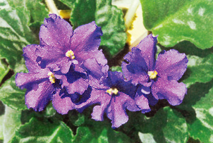
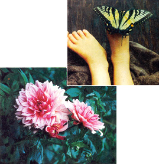
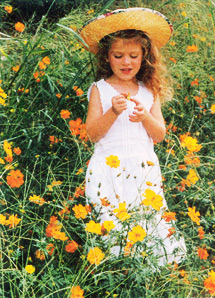

It's Shutterbug Season!
Results of Mother's photo club: Kristen Downie, Michael Gebo, Joni Solis, Susan Moran and Thelma Patterson.
April/May 1999
MOTHER'S PHOTO CLUB
In the spring, at the end of the day, you should smell like dirt.
-Margaret Atwood.
With longer, warmer days upon us, no doubt you're hankering to get your hands (and just about everything else) dirty. As you plan this year's garden, we hope you'll find some inspiration in the flora and fauna pictured here. If you haven't clicked your camera for us yet, what are you waiting for? Send those works of art to: MOTHER'S Photo Club, attn.: Photo Dept., Mother Earth News, P.O. Box 129, Arden, NC 28704. If we print your photo, we'll send you $50, plus a six-times-yearly newsletter featuring hints from our photo department and news from the club.
North America is home to 760 species of butterflies, about 100 of which flutter in Florida. Worldwide, some 19,000 species of butterflies are known to exist, gracing every continent except Antarctica.
 Kristen Downie, of Nisswa, MN, sent this photo of daughter, Elizabeth. |
 African violet, by Michael A. Gebo, Rindge, NH |
 Above: Joni Solis of Kentwood, LA, captured this butterfly. Left: Dahlia, by Susan Moran, Chaplin, CT |
|
 Right: Thelma Patterson, of Marshville, N.C., took this photo of Kayla Fatih, playing in a field of poppies. |
|
|